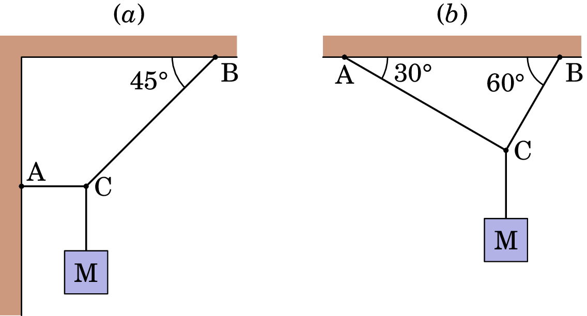
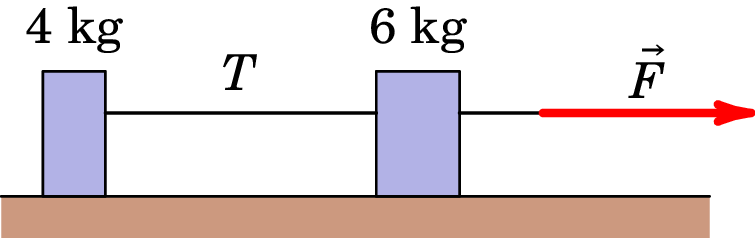
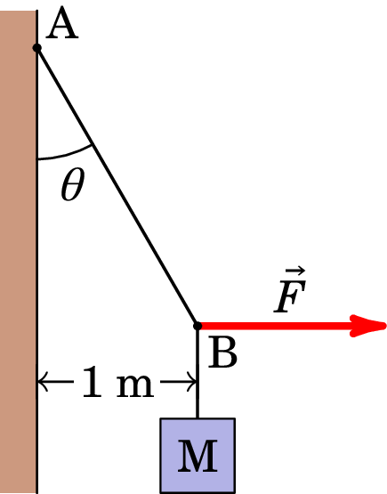
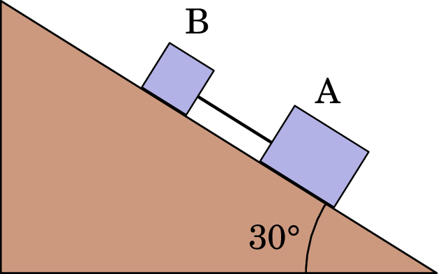
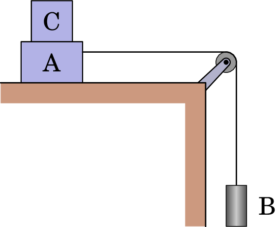
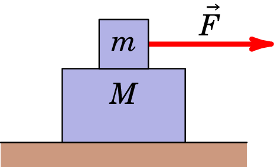

Jaime E. Villate. Problemas de Mecânica,
University of Porto, Portugal, 2025.
Estes problemas foram retirados da Terceira Folha Complementar de Problemas do Professor Paulo Sá.
1. Uma partícula de massa 2 kg está sujeita a uma força definida pela expressão (SI). Sabendo que a partícula se encontrava inicialmente em repouso e na origem dos eixos, determine os vetores aceleração, velocidade e posição da partícula em função do tempo e particularize para o instante s. (m/s2; (m/s); (m)
2. Uma partícula material de massa 2 g move-se ao longo de uma curva definida pelo vetor posição (cm). Calcule a força que atua na partícula no instante s. Apresente o seu resultado em unidades SI e CGS. (×10−5N) (dyn)
3. Um disco de hóquei com massa de 0.160 kg está em repouso na origem () numa superfície horizontal sem atrito. No instante , um jogador aplica sobre o disco uma força de 0.250 N paralela ao eixo ; ele continua a aplicar a força até s.
5. Para cada um dos esquemas representados na figura que se segue, determine o valor das tensões nas cordas AC e BC se o corpo M tiver um peso de 50 N.

(a) 50 N e 70.7 N; (b) 25 N e 43.3 N.
7. Duas caixas, uma massa de 4.0 kg e outra de 6.0 kg, estão em repouso sobre a superfície sem atrito de um lago congelado, ligadas por uma corda leve (ver figura). Uma mulher, usando umas sapatilhas de sola áspera de modo a não escorregar, puxa horizontalmente a caixa de 6.0 kg com uma força que produz uma aceleração de 2.50 m/s2. A corda que liga as duas massas permanece tensa e horizontal durante o movimento descrito.

8. De acordo com o esquema representado em baixo, um corpo com massa 80 kg está preso por um fio no ponto A. No ponto B do fio aplica-se uma força horizontal , desviando-o 1 m da parede. Sabendo que AB é 2 m, determine a intensidade da força e o valor da tensão no fio, . N; N.

9. Um trabalhador está a tentar mover uma caixa de 500 N sobre um piso plano. Para iniciar o movimento, o trabalhador necessita de aplicar uma força horizontal de módulo igual a 230 N. Depois de se mover, isto é, após deixar o repouso e iniciar o movimento, a força que o trabalhador necessita de exercer para manter o movimento da caixa com velocidade constante é de apenas 200 N. Calcule o coeficiente de atrito estático e o coeficiente de atrito cinético. ; .
10. Um trabalhador está a tentar mover uma caixa puxando uma corda amarrada a esta, que faz um ângulo de 30º com a horizontal. Considere que N é o peso da caixa e o coeficiente de atrito cinético entre a superfície da caixa e a superfície sobre a qual desliza.
11. Um trenó, cheio de estudantes com uma massa total igual a , escorrega para baixo numa encosta coberta de neve. A montanha possui uma inclinação relativamente à horizontal. Em todas as alíneas represente o diagrama do corpo livre.
12. Duas caixas A e B, de massas kg e kg, respetivamente, estão ligadas entre si por uma haste de massa desprezável, conforme se representa na figura em baixo. Sabendo que o plano tem uma inclinação de 30º e que os coeficientes de atrito cinético entre as caixas A e B e a superfície do plano são, respetivamente, 0.2 e 0.3, determine a aceleração do conjunto, bem como a tensão na haste. m/s2; N.


13. No esquema da figura ao lado, os corpos A e B têm massas de 10 kg e 5 kg, respetivamente, estando ligados por um fio inextensível e de massa desprezável. O coeficiente de atrito (estático ou dinâmico, suponha que têm o mesmo valor) entre a superfície do corpo A e a superfície da mesa é 0.25.14. Uma pessoa guiando uma bicicleta faz uma curva de raio constante, com velocidade constante de 29,0 km/h. Qual o menor raio para fazê-la sem derrapar, se o coeficiente de atrito estático entre os pneus da bicicleta e o asfalto for de 0.32? 20.7 m.
15. Devido à resistência do ar, as gotas de chuva caem com uma velocidade constante a partir de certa altura. O módulo da força de resistência que o ar exerce é dada por , onde é uma constante de valor 8×10−6 N·s2/m2 e é o módulo da velocidade. Nessas circunstâncias, calcule o módulo da velocidade, em m/s, com que uma gota da chuva atinge o solo, sabendo que uma gota possui peso, em módulo, igual a 3.2×10−7 N. 0.2 m/s.
16. Uma corda é amarrada a um balde de água e o balde é posto a girar num círculo vertical de raio 0.600 m. Calcule o valor mínimo que a velocidade do balde deve ter no ponto mais elevado do círculo para que a água não seja expelida do balde. 2.4 m/s.
17. Os blocos da figura movem-se sobre uma superfície horizontal com atrito, sendo o coeficiente de atrito cinético entre o bloco com massa e a superfície sobre a qual assenta. Existe igualmente atrito entre as superfícies de ambos os blocos, sendo o coeficiente de atrito estático entre eles .
